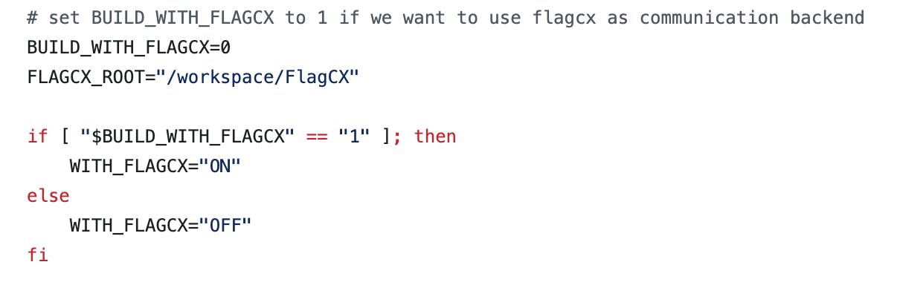
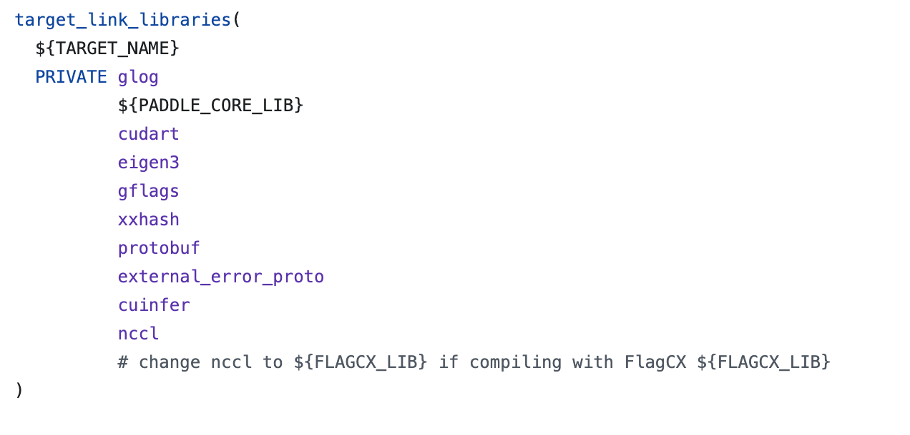

Guide for using paddle with FlagCX on iluvatar machines#
Environment setup#
prepare a docker container on Iluvatar machines
start the docker container
sudo docker exec -it [container_name] bash
clone PaddleCustomDevice
git clone https://github.com/PaddlePaddle/PaddleCustomDevice.git
clone FlagCX
git clone https://github.com/flagos-ai/FlagCX.git
Compile paddle with FlagCX#
cd into iluvatar_gpu directory
cd PaddleCustomDevice/backends/iluvatar_gpu
modify default build script to enable compiling with FlagCX
In
build_paddle.sh
setBUILD_WITH_FLAGCX=1and the correct location forFLAGCX_ROOTIn
CMakeLists.txt
changencclto${FLAGCX_LIB}
run build script
bash build_paddle.shrun install script
bash install_paddle.sh


Note: To build Paddle with FlagCX on Iluvatar machines, we need to ensure that FlagCX is built before building Paddle
Train model using paddle + FlagCX#
We now support training ERNIE4.5 on Iluvatar machines using Paddle + FlagCX. Please refer to the following steps to get started
Get ERNIE-4.5-Lite model from huggingface
ERNIE-4.5-Lite corresponds to ERNIE-4.5-21B-A3B-Paddle
clone ERNIE repo
git clone https://github.com/PaddlePaddle/ERNIE.git
install dependencies
cd ERNIE pip install -r requirements/gpu/requirements.txt
create a training script; please refer to the training script below
#!/bin/bash # Copyright (c) 2025 PaddlePaddle Authors. All Rights Reserved. # # Licensed under the Apache License, Version 2.0 (the "License"); # you may not use this file except in compliance with the License. # You may obtain a copy of the License at # # http://www.apache.org/licenses/LICENSE-2.0 # # Unless required by applicable law or agreed to in writing, software # distributed under the License is distributed on an "AS IS" BASIS, # WITHOUT WARRANTIES OR CONDITIONS OF ANY KIND, either express or implied. # See the License for the specific language governing permissions and # limitations under the License. unset PADDLE_TRAINERS_NUM unset PADDLE_ELASTIC_JOB_ID unset PADDLE_TRAINER_ENDPOINTS unset DISTRIBUTED_TRAINER_ENDPOINTS unset FLAGS_START_PORT unset PADDLE_ELASTIC_TIMEOUT export PADDLE_DISTRI_BACKEND=xccl export PADDLE_XCCL_BACKEND=iluvatar_gpu export PYTHONPATH=$(dirname "$0")/../../../..:$PYTHONPATH export FLAGS_set_to_1d=False export NVIDIA_TF32_OVERRIDE=0 export FLAGS_dataloader_use_file_descriptor=False export FLAGCX_SOCKET_IFNAME=ens22f0,ens11f0np0 export FLAGCX_IB_HCA=mlx5_101 export FLAGCX_DEBUG=TRACE export FLAGCX_DEBUG_SUBSYS=INIT export FLAGCX_ENABLE_TOPO_DETECT=TRUE #export GLOG_v=4 #export FLAGS_call_stack_level=3 #export LD_PRELOAD=/usr/local/corex-4.3.0/lib64/libcuda.so.1 model_path="/workspace/ernie/ERNIE-4.5-Lite" #model_path="/workspace/ernie/ERNIE-4.5-21B-A3B-Paddle" task="sft_8k" paddle_log_dir="${model_path}/${task}_log" vdl_log_dir="${model_path}/${task}_vdl" output_dir="${model_path}/${task}_checkpoint" rm -rf ${paddle_log_dir} python3 -m paddle.distributed.launch \ --log_dir ${paddle_log_dir} \ --gpus 0,1,2,3,4,5,6,7,8,9,10,11,12,13,14,15 \ ../../../../examples/post-training/sft/train.py \ --logging_dir ${vdl_log_dir} \ --model_name_or_path ${model_path} \ --output_dir ${output_dir} \ --per_device_train_batch_size 1 \ --per_device_eval_batch_size 1 \ --train_dataset_path "/workspace/ernie/ERNIEKit-tianshu-new/examples/data/sft-train.jsonl" \ --train_dataset_prob "0.8" \ --train_dataset_type "erniekit" \ --eval_dataset_path "/workspace/ernie/ERNIEKit-tianshu-new/examples/data/sft-eval.jsonl" \ --train_dataset_prob "0.2" \ --train_dataset_type "erniekit" \ --max_steps 100 \ --max_evaluate_steps 10000 \ --num_train_epochs 1 \ --save_steps 500 \ --logging_steps 1 \ --eval_steps 500 \ --weight_decay 0.01 \ --do_train \ --evaluation_strategy steps \ --tensor_parallel_degree 4 \ --pipeline_parallel_degree 4 \ --sharding_parallel_degree 1 \ --sharding stage1 \ --max_seq_len 8192 \ --seed 23 \ --gradient_accumulation_steps 2 \ --warmup_steps 20 \ --lr_scheduler_type "linear" \ --learning_rate 3e-4 \ --num_samples_each_epoch 6000000 \ --bf16 \ --fp16_opt_level O2 \ --amp_custom_white_list "lookup_table" "lookup_table_v2" "flash_attn" "matmul" "matmul_v2" "fused_gemm_epilogue" \ --amp_custom_black_list "reduce_sum" "softmax_with_cross_entropy" "c_softmax_with_cross_entropy" "elementwise_div" "sin" "cos" \ --disable_tqdm True \ --recompute 0 \ --offload_optim 0 \ --recompute_granularity "full" \ --dataloader_num_workers 1 \ --distributed_dataloader 1 \ --use_flash_attention 1 \ --use_sparse_head_and_loss_fn 0 \ --use_attn_mask_start_row_indices 0 \ --use_sparse_flash_attn 0 \ --tensor_parallel_output 0 \ --pipeline_parallel_config "disable_partial_send_recv enable_clear_every_step_cache disable_batch_p2p_comm" \ --greedy_intokens 1 \ --lr_scheduler linear \ --sequence_parallel 1 \ --release_grads 1 \ --recompute_use_reentrant True \ --fuse_rope 1 \ --device iluvatar_gpu \ --continue_training False \ --moe_group "mp" \ --lora \ --lora_rank 32 \ --moe_multimodal_dispatch_use_allgather "" \ --unified_checkpoint_config "async_save"